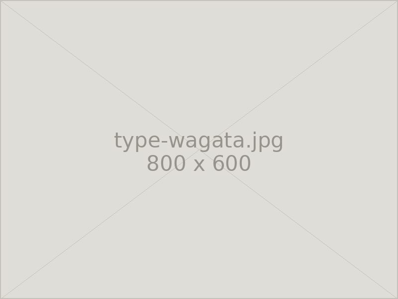
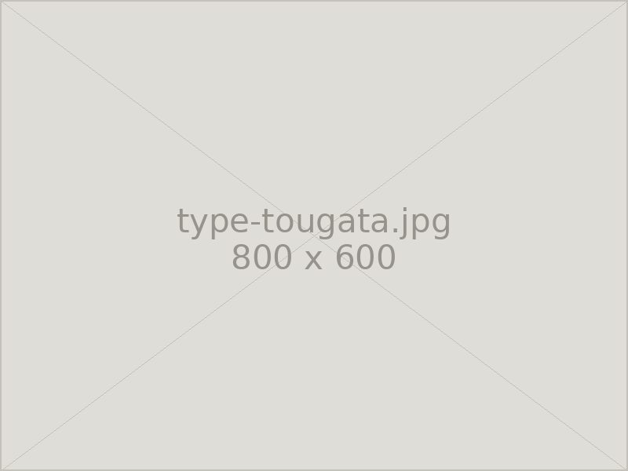

墓石 新規
オーダーメイドのお墓を丁寧にご提案・施工します。形、石、彫る文字のひとつひとつを、ご家族のお考えをうかがいながら決めてまいります。
お墓のタイプ
お墓の形には大きく分けて三つのタイプがあります。墓地の広さや宗派、ご家族のお考えによって選び方は変わりますので、迷われた際はお気軽にご相談ください。

和型
古くから建てられてきた、縦に長い竿石が特徴の伝統的な形です。「〇〇家之墓」といった彫刻がよく用いられ、寺院墓地との調和がとりやすいタイプです。
洋型
横長で背が低く、デザインの自由度が高い形です。「絆」「和」といった好きな言葉やお名前を刻む方も多く、明るい雰囲気の霊園によく合います。重心が低く、地震にも比較的強いタイプです。

塔型
五輪塔や宝篋印塔など、供養塔として建てられる形です。先祖代々のお墓としてはもちろん、既存のお墓に添えて建立されることもあります。
石の選び方
石は産地によって色味・硬さ・吸水率が異なり、それが価格と耐久性に表れます。ご予算とお考えに合わせて、大きく三つの方向からお選びいただいています。実物の見本をご覧いただきながらご説明しますので、写真だけで決める必要はありません。
価格を重視して選ぶ
中国産をはじめとした流通量の多い石材から、コストを抑えてお選びいただけます。近年は加工技術が向上しており、価格を抑えながらも十分な仕上がりが得られます。
石質を重視して選ぶ
吸水率が低く、経年での色むらが出にくい石を中心にご提案します。長くきれいな状態を保ちたい方に向いた、価格と品質のバランスがとれた選び方です。
高級石材から選ぶ
庵治石や大島石をはじめとする国産の銘石です。艶の深さと目の細かさが際立ち、年月を重ねるほどに風格が出てまいります。
墓地の種類
お墓を建てる場所によって、費用や申し込みの条件、建てられるお墓の形が変わります。それぞれの特徴は次のとおりです。
| 公営墓地 | 都道府県や市区町村が運営する墓地です。永代使用料が比較的抑えられ、宗旨・宗派を問わないことがほとんどです。募集期間が限られており、応募資格や抽選が設けられている場合があります。 |
|---|---|
| 寺院墓地 | お寺が管理する墓地です。日々の管理や法要をお願いできる安心感があります。原則としてそのお寺の檀家になることが条件となり、墓石の形に決まりがある場合もあります。 |
| 民営墓地 | 宗教法人・公益法人などが運営する霊園です。宗旨・宗派を問わないところが多く、区画やお墓の形を比較的自由にお選びいただけます。設備が整っている霊園が多いのも特徴です。 |
※ 霊園によっては指定石材店制度があり、建立をお引き受けできない場合があります。ご検討中の墓地が決まっている場合は、まずお電話でお知らせください。
建立までの流れ
- Step 01ご相談お電話またはメールでご連絡ください。ご予算やご希望のイメージ、墓地の場所などをうかがいます。
- Step 02現地の確認墓地に伺い、区画の広さや地盤、搬入経路を確認します。霊園の規定もあわせて確認いたします。
- Step 03ご提案・お見積り図面と石の見本をご用意し、仕様とお見積りをご提示します。ご納得いただけるまで何度でも作り直します。
- Step 04ご契約・製作仕様が決まりましたらご契約となります。石を加工し、彫刻の原稿もご確認いただきます。
- Step 05基礎工事・据付基礎をしっかり作り、免震施工を行ったうえで据え付けます。仕上がりをご確認いただいて完成です。
お気軽にご相談ください
お見積り・ご相談は無料です。まずはお電話でお聞かせください。
営業時間 8:00〜17:00 ／ 定休日 毎月14・15日、土日
FAX 03-3333-8452